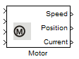

Motor

Robotino has three motors which it uses for omnidirectional motion. The motors can be controlled individually by providing the Motor Number [0 - 2] . Speed, PID values, brake can all be controlled using the simulink block provided.
Contents
Block properties
Inputs
- ComId
- Target speed [rpm]
- Brake - set true (1) to activate the brake, set false (0) for otherwise.
- Reset Position - to reset the position of the motor.
Outputs
- Actual speed - the actual speed (rpm) of a motor.
- Actual position - the actual position of a motor.
- Motor current - the current (A) of a motor.
Parameters
- Motor number - the motor number [0 - 2]
- Constant P - the proportional constant. Typical value 0.95.
- Constant I - the integral constant. Typical value 0.1.
- Constant D - the differential constant. Typical value 0.01.